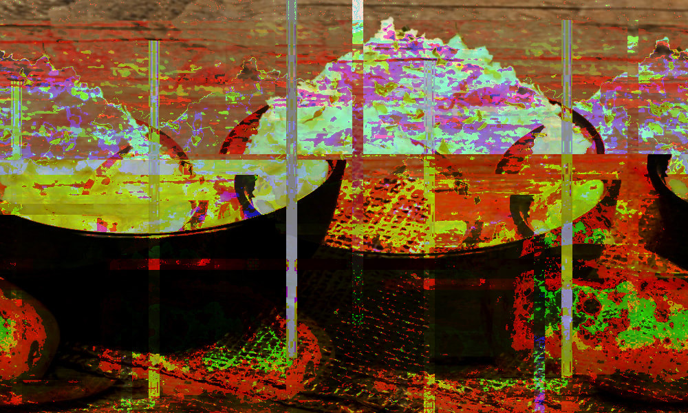
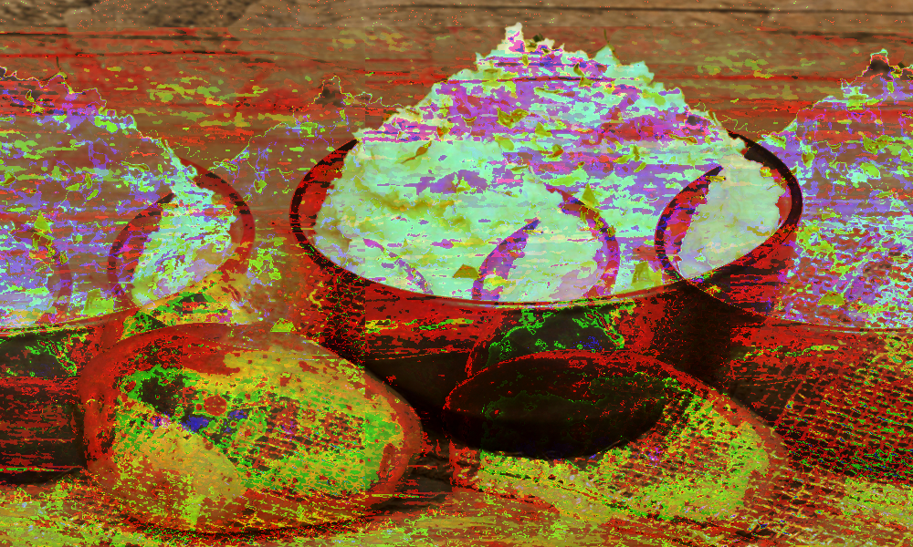

"Mished" 2024. Sept. 07 Data Bending demonstration. Before mashing a potato, you're expected to peel a potato and then mashed. Maybe I missed a few steps before I got here. This involved the use of going into the code make-up of the image and adding in unconventional code strings that gave me this.
"Mashed" 2024. Sept. 07 Data Bending and Data Moshing demonstration where a harmless photo of commercial ready mashed potato gets bent. If we can mash the insides of a potato, what's stopping us from doing the same with the photo's code?
"Moshed" 2024. Sept. 07 Data Moshing demonstration. Something funny about digitally cooking an image until it's essentially burnt. My demonstration is meant to highlight the usage of highlighting a code of an image and using other tools like Audacity and Note Pad++ and mashing the two tools together. Some use ricers, others use mashers, I used programs.